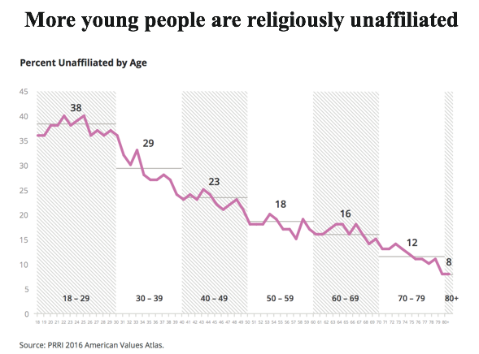
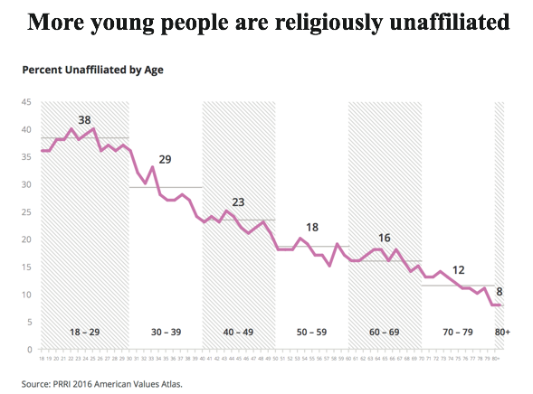

These might change overtime, but as of now, these are my views. Just click or tap each tab to expand it.
I strongly support the freedom to practice whichever religion you want, as long as it doesn't encroach on anyone else's rights.
I believe that church and state should be completely separate, churches should be treated like every other business, including taxation and any other laws.
For transformation, we need power, and in democracy, power is people; pushing individuals from the left is opposed to the primary goal of any political idea or movement, which is to grow. The anti-religious view the left expresses is nonsensical, especially since it prevents the world from seeing proper material change.
[1] [2] [3]
 

Marijuana:
The introduction of medical marijuana laws (MMLs) leads to a decrease in violent crime in states that border Mexico. MMLs in inland states lead to a reduction in crime in the nearest border state. Results are consistent with the theory that decriminalisation of the production and distribution of marijuana leads to a reduction in violent crime in markets that are traditionally controlled by Mexican drug trafficking organisations.
Medical cannabis laws are associated with significantly lower state-level opioid overdose mortality rates.
Because chronic pain is a major indication for medical cannabis, laws that establish access to medical cannabis may change opioid consumption rates and overdose mortality related to opioid analgesics in states that have enacted them.
After legalization in colorado consumption rates for 18+ rose slightly and 18- drop significantly almost by half, which leads me to belive that consumption of marijuana in the <18 will drop significantly if its legalized. This could be due to a plethora of factors, one being the fact that you need to be over the age of 18 to purchase marijuana.
-------------------------------------------------------
Other Drugs:
There is a vast lack of evidence showing that punishing people for drug consumption will deter them from consuming it, on the contrary there is much evidence of the opposite.
You also have the added tax benifit of legalization and all other benifits which come from a government having some control of a market.
another massive issue with not controlling the supply of drugs is lacing, which can lead to overdosing.
[1]
[2]
[3] [4]
[5] [6]
[7] [8]